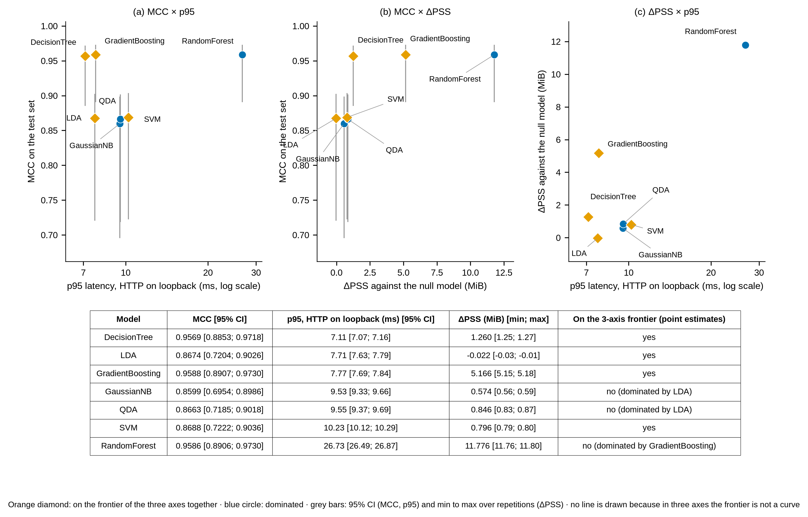
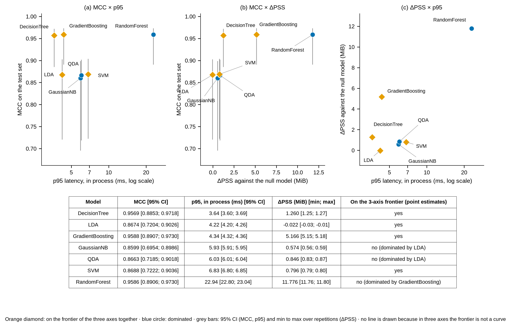

Pareto exploratório de três eixos: MCC, p95 e ΔPSS
Fronteira de Pareto de três eixos (qualidade, latência e memória) de 7 modelos, montada com as medições que já existem. É um rascunho exploratório: o Pareto final, com a probabilidade de cada modelo pertencer à fronteira e o hipervolume, vem depois da rodada final sem estresse (ticket 24; o ticket 21 depende dele). Nenhum limite de latência entra na leitura: um modelo é dominado só quando outro é melhor ou igual nos três eixos.
As figuras têm texto em inglês e ficam em figuras/; o texto e as tabelas estão em português. Todas as medições de latência e de memória são exploratórias.
Os três eixos
| Eixo | Direção | Fonte | Incerteza mostrada |
|---|---|---|---|
| Qualidade: MCC (coeficiente de correlação de Matthews) no conjunto de teste | maximizar | run paper_protocol, conjunto de teste | IC 95% por bootstrap de fluxos inteiros |
| Latência: p95 com 1 linha por chamada | minimizar | via HTTP em loopback (13/11) ou em processo (12/11) | IC exploratório (no p95, a união do bootstrap com o IC-t das repetições) |
| Memória: ΔPSS contra o modelo nulo | minimizar | bateria de 12/11 | mínimo e máximo entre as repetições (n = 5; a árvore, 6) |
- Duas versões da latência: via HTTP em loopback (7 modelos) e em processo (a latência do protocolo, que serve de conferência). A fronteira sai igual nas duas: o HTTP soma cerca de 2,55 ms em todos os modelos, o que desloca os pontos mas não muda a ordem.
- Só os 7 modelos com seletor LowVariance. As 4 configurações com MutualInformation (GradientBoosting e RandomForest com 5 e com 8 variáveis) ficam de fora: só têm MCC na validação, não no teste.
Como a fronteira é lida
- Pontual (losango laranja): dominância estrita nas estimativas pontuais. A domina B se A não é pior em nenhum eixo e é melhor em algum.
- Possível e certa: dominância de intervalos. Possível: nem o pior caso de nenhum modelo domina o melhor caso dele. Certa: nem o melhor caso de nenhum modelo domina o pior caso dele. Não são probabilidades.
- Empate prático (ε): diferença menor que a margem (MCC ± 0,005; latência: o maior entre 5% e 5 µs; ΔPSS: o maior entre 5% e 64 KiB) conta como empate.
Resultado (igual nas duas versões de latência)
| Modelo | Pontual | Empate prático (ε) | Possível | Certa | Dominado por |
|---|---|---|---|---|---|
| DecisionTree | sim | sim | sim | sim | |
| LDA | sim | sim | sim | sim | |
| GradientBoosting | sim | não | sim | não | |
| SVM | sim | não | sim | não | |
| GaussianNB | não | não | sim | não | LDA |
| QDA | não | não | sim | não | LDA |
| RandomForest | não | não | sim | não | GradientBoosting |
- DecisionTree e LDA são a fronteira em todas as leituras: a árvore tem a menor latência e o MCC alto; o LDA tem a menor memória (ΔPSS ≈ 0).
- GradientBoosting e SVM estão na fronteira só nas estimativas pontuais. O GradientBoosting tem MCC 0,0019 acima da árvore (dentro do IC e da margem) e gasta 5,17 MiB contra 1,26 MiB, então a árvore o ε-domina. O SVM tem MCC 0,0014 acima do LDA, também dentro da margem.
- GaussianNB e QDA são dominados pelo LDA: o LDA é melhor em latência e memória, e o MCC deles é igual ou menor.
- RandomForest é dominado pelo GradientBoosting em MCC (0,9586 contra 0,9588), latência e memória.
- Todos são "possíveis", porque os IC do MCC são muito largos (de 0,72 a 0,90 nos modelos fracos): com n efetivo de Kish de 6,6 fluxos no teste, o MCC não separa os modelos da mesma família.
Figuras


Limites
- Exploratório. Não é o Pareto do artigo: não há probabilidade de pertencer à fronteira por reamostragem conjunta, hipervolume nem tabela de empates por reamostragem.
- Três fontes de dias diferentes: MCC do run
paper_protocol(teste), latência via HTTP de 13/11 e ΔPSS com latência em processo de 12/11. Boot, núcleos fixados e temperatura não são os mesmos. - MCC no teste: o protocolo escolhe na validação e o teste só confirma; aqui o teste entra como eixo de qualidade. O n efetivo de Kish do teste é 6,6 fluxos: os IC são largos, e as diferenças entre DecisionTree, GradientBoosting e RandomForest (até 0,0019) estão dentro deles.
- ΔPSS: o −0,02 MiB do LDA é ruído (a variação do modelo nulo é maior); leia como zero. O SVM usa o processo só com 1 linha por chamada; os outros foram medidos num processo que também rodou com 1.024 linhas por chamada.
- Fronteira sem linha: em três eixos ela não é uma curva em nenhuma projeção, então a linha foi omitida para não sugerir uma ordem que não existe.
- Um rasp, sem ventoinha, e pseudorreplicação das repetições (mesmo boot e mesmo ambiente).